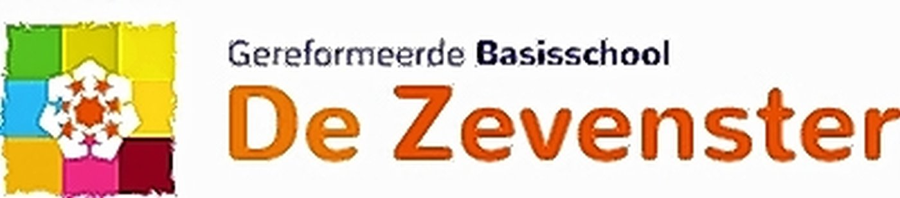
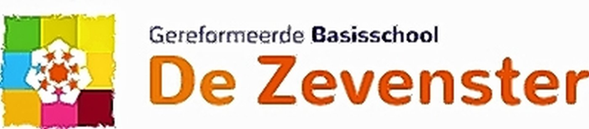

Home
Wie ben ik
Opleidingen
Bijbanen
Hobby's

Home
Wie ben ik
Opleidingen
Bijbanen
Hobby's
Ik heb al op 3 verschillende scholen gezeten.
Dat waren de Zevenster in Hardinxveld-Giessendam, het Gilde in Gorinchem,
Op het Gilde kreeg ik de eerste 2 jaar normale lessen bijvoorbeeld nederlands engels wiskunde.
Toen heb ik voor het derde jaar gekozen om electro-ICT te volgen.
Daarna ben ik naar het Davinci college in Gorinchem gegaan, waar ik eerst de opleiding medewerker beheer ICT en nu de opleiding applicatie en mediaontwikkelaar volg.